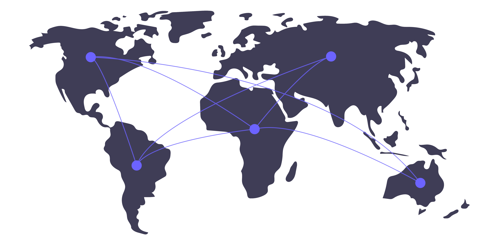

<div class="zoobc-server-container">
  <h2 class="mat-h2">{{ 'Zoobc Server' | translate }}</h2>
  <mat-card style="padding: 0">
    <div class="content padding">
      <h2>CONNECT TO ZOOBC SERVER</h2>
      
      <span class="message">Get ready to be connected with every service of ZooBC Server</span>
      <mat-form-field appearance="outline">
        <mat-label>Select Network</mat-label>
        <mat-select>
          <mat-option value="option">Default Network</mat-option>
        </mat-select>
      </mat-form-field>
      <button mat-flat-button color="primary" type="submit" routerLink="/zoobc-server/zoobc-server-extension">
        <span>{{ 'Connect' | translate }}</span>
      </button>
    </div>
  </mat-card>
</div>
